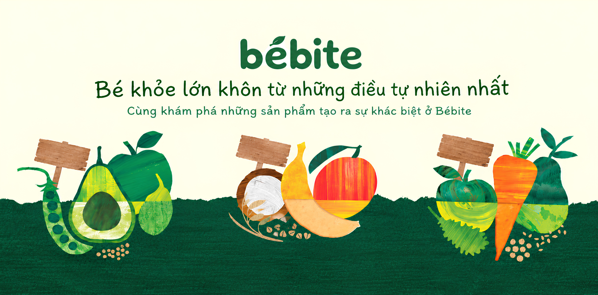
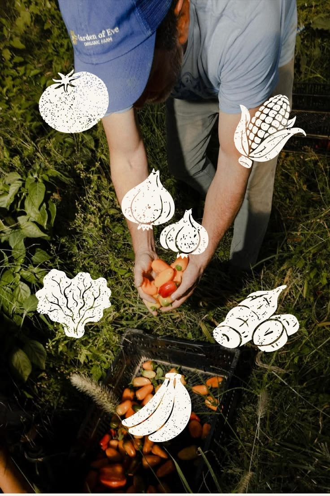
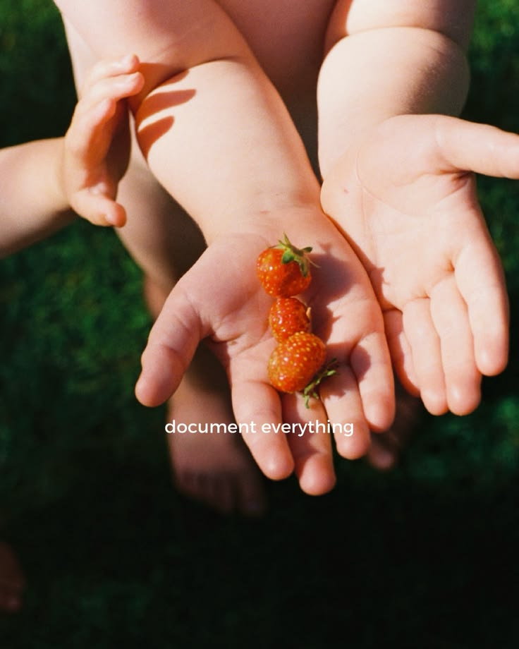
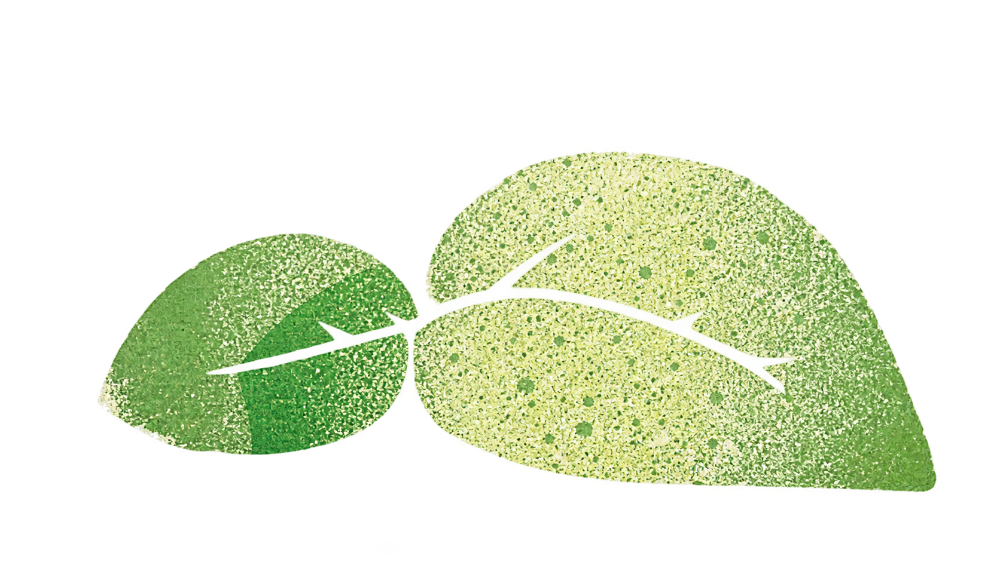
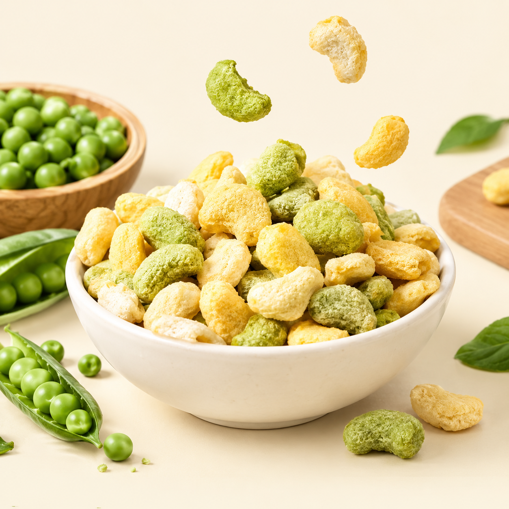
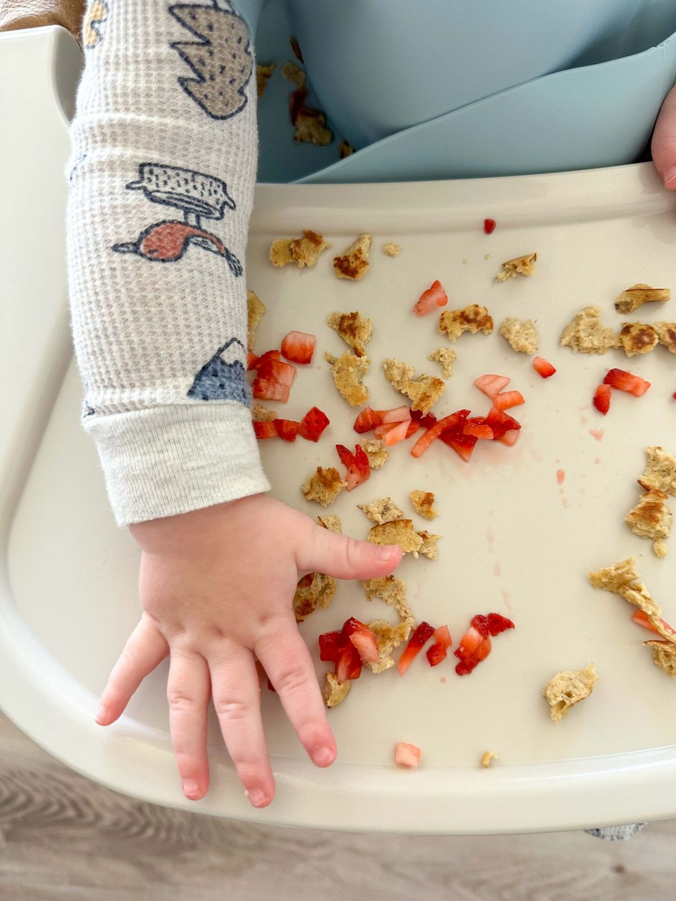
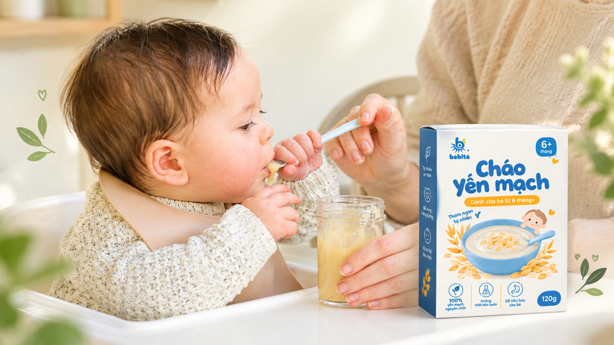
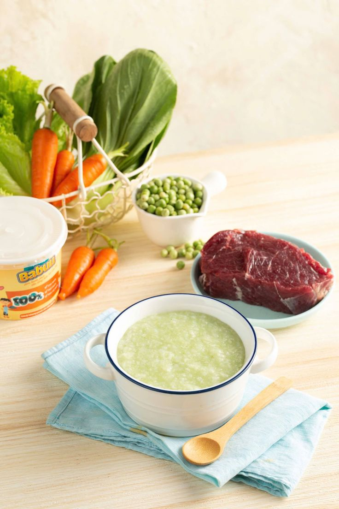
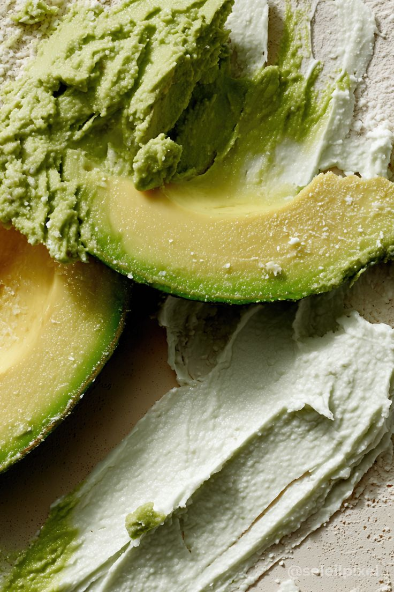
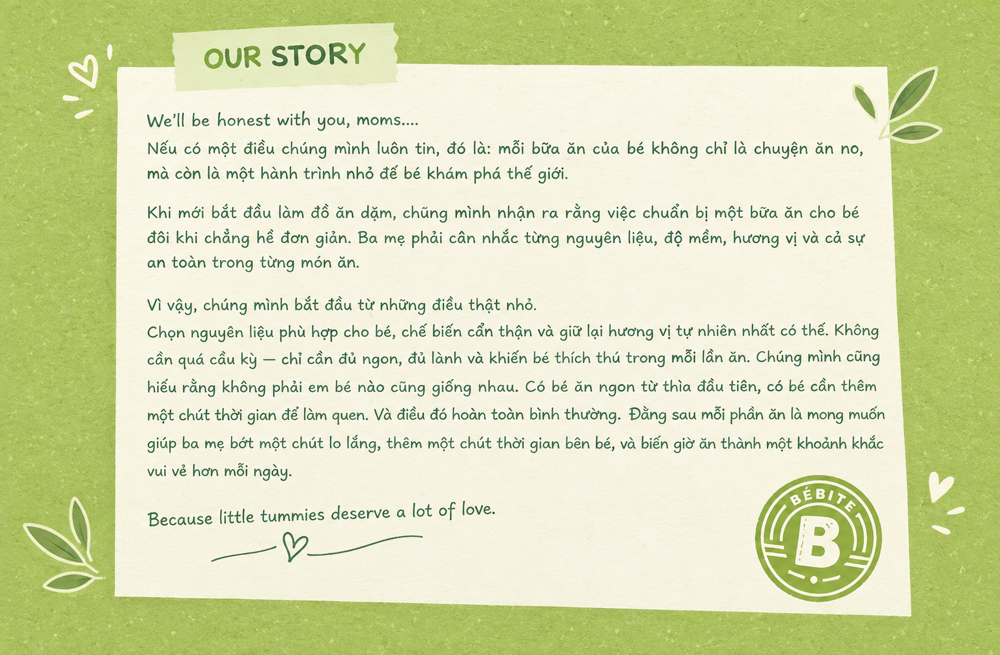

SẢN PHẨM NỔI BẬT
Từ những bữa ăn dặm đầu tiên đến những món ăn vặt nhỏ xinh, Bébite đồng hành cùng bé trong hành trình khám phá thế giới dinh dưỡng.
Xem tất cả sản phẩmsản phẩm
tin tưởng
tích cực
GÓC CHIA SẺ TỪ BA MẸ
"Bé nhà mình mới 7 tháng rất kén ăn, đổi qua dùng cháo yến mạch với bánh dặm que của Bébite trộm vía bé tự nhón ăn ngon lành mà không hề bị hóc."
"Thích nhất là tiêu chí 3 Không và vị nguyên bản thơm nhạt của nông sản, dầu olive và dầu cá hồi cho vào cháo không hề bị tanh nồng chút nào."
"Đặt hàng giao nhanh đóng gói cẩn thận. Bao bì đẹp mắt, hướng dẫn sử dụng chi tiết rất an tâm cho ba mẹ lần đầu có con ăn dặm."
LỜI HỨA VỮNG VÀNG VỀ CHẤT LƯỢNG

LÀNH MẠNH VÀ AN TOÀN
Chúng tôi tin rằng chiếc bụng nhỏ êm ru chính là nền tảng để con vui khỏe và khám phá thế giới mỗi ngày. Vì thế, Bébite luôn ưu tiên các công thức sánh mịn màng, dồi dào chất xơ hòa tan tự nhiên giúp đường ruột non nớt của bé nhẹ tênh, hấp thu trọn vẹn từng muỗng ngọt lành. Mọi nguyên liệu đều được kiểm định an toàn nghiêm ngặt trước khi đến với con yêu.
TỰ NHIÊN & MINH BẠCH
Chúng tôi tin rằng sự an tâm của ba mẹ bắt đầu từ sự trung thực và nguồn gốc thuần khiết nhất. Bébite kiên định với cam kết 3 Không: không thêm đường mía, không muối và không chất bảo quản. Từng sản phẩm gửi gắm đến bé là sự nâng niu trọn vẹn từ hương vị tự nhiên của nông sản sạch, minh bạch rõ ràng trong từng thành phần công bố.

Dinh Dưỡng Tốt
Bé Khỏe Mỗi Ngày







CÂU HỎI THƯỜNG GẶP ?
Ở mốc 6 tháng, hệ tiêu hóa của con mới làm quen với thức ăn đặc. Ba mẹ nên ưu tiên: (1) Cháo ăn dặm yến mạch & các loại hạt dinh dưỡng nấu nhuyễn. (2) Trái cây nghiền Bơ Chuối, Xoài Cát Chu mịn mượt. (3) Thêm 1/2 thìa cà phê Dầu ăn dặm sau khi nấu chín.
Hoàn toàn an toàn khi dùng cho bé từ 6 tháng trở lên. Bánh ăn dặm và bánh gạo nướng Bébite có kết cấu xốp mịn đặc biệt, tự tan nhanh trong miệng chỉ sau vài giây tiếp xúc với nước bọt.
Dạ ba mẹ vào trang Sản Phẩm và tích chọn mục "Dành cho bé dị ứng đạm bò", hệ thống sẽ tự động lọc ra các món hoàn toàn không chứa sữa bò.
Bébite cam kết tiêu chuẩn 3 KHÔNG khắt khe: Không thêm đường mía/muối tinh luyện; Không sử dụng chất bảo quản; Không chứa phẩm màu hay hương liệu nhân tạo.
Khu vực nội thành (TP.HCM): Giao trong vòng 1 – 2 ngày làm việc. Khu vực các tỉnh/thành phố khác: Đơn hàng được giao tận nơi từ 2 – 4 ngày làm việc.